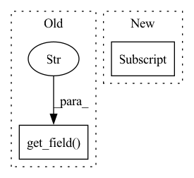

Pattern ID :25359
Before Change
if self._curr_pacg.is_done():
self._curr_model_config = self._curr_mcg.next_config()
self._curr_pacg = PerfAnalyzerConfigGenerator(
self._config, self._curr_model_config.get_field("name" ) ,
self._model_pa_flags, self._model_parameters)
perf_analyzer_config = self._curr_pacg.next_config()After Change
run_config = self._generate_run_config(model_configs,
perf_analyzer_config)
if pacg.is_done() and model_configs == model_configs_list[-1] :
self._is_done = True
yield run_configIn pattern: SUPERPATTERN
Frequency: 3
Non-data size: 2
Instances Fragment ID: 77569960
Project Name: triton-inference-server/model_analyzer
Commit Name: 3e5d7d52ad842053aaef7e37d3cc8b479fd80291
Time: 2022-01-27
Author: 92820864+nv-braf@users.noreply.github.com
File Name: model_analyzer/config/generate/run_config_generator.py
M Class Name: RunConfigGenerator
N Class Name: RunConfigGenerator
M Method Name: next_config(1)
N Method Name: next_config(1)
M Parent Class: ConfigGeneratorInterface
N Parent Class: ConfigGeneratorInterface
M File Name: model_analyzer/config/generate/run_config_generator.py
N File Name: model_analyzer/config/generate/run_config_generator.py
M Start Line: 58
M End Line: 68
N Start Line: 63
N End Line: 82
Before Change
self._curr_mcg = ModelConfigGenerator(config, model, client)
self._curr_model_config = self._curr_mcg.next_config()
self._curr_pacg = PerfAnalyzerConfigGenerator(
self._config, self._curr_model_config.get_field("name" ) ,
self._model_pa_flags, self._model_parameters)
def is_done(self):After Change
// MM-PHASE 1: Assuming that all models are identical, so using first model"s flag/parameters/env
self._model_pa_flags = models[0].perf_analyzer_flags()
self._model_parameters = models[0].parameters()
self._triton_server_env = self._models[0] .triton_server_environment()
self._is_done = False
Fragment ID: 77569959
Project Name: triton-inference-server/model_analyzer
Commit Name: 3e5d7d52ad842053aaef7e37d3cc8b479fd80291
Time: 2022-01-27
Author: 92820864+nv-braf@users.noreply.github.com
File Name: model_analyzer/config/generate/run_config_generator.py
M Class Name: RunConfigGenerator
N Class Name: RunConfigGenerator
M Method Name: __init__(4)
N Method Name: __init__(4)
M Parent Class: ConfigGeneratorInterface
N Parent Class: ConfigGeneratorInterface
M File Name: model_analyzer/config/generate/run_config_generator.py
N File Name: model_analyzer/config/generate/run_config_generator.py
M Start Line: 35
M End Line: 45
N Start Line: 39
N End Line: 49
Before Change
for measurement in measurements:
instance_group_str = model_config.instance_group_string()
row = [
model_config.get_field("name" ) ,
model_config.dynamic_batching_string(), instance_group_str,
measurement.get_metric("perf_latency").value(),
measurement.get_metric("perf_client_response_wait").value(),After Change
else:
for measurement in measurements:
row = [
measurement.perf_config()["concurrency-range"] ,
measurement.get_metric("perf_latency").value(),
measurement.get_metric(
"perf_client_response_wait").value(), Fragment ID: 77569958
Project Name: triton-inference-server/model_analyzer
Commit Name: 50f878682c545b5bbb3cb1abceda327d9872d800
Time: 2021-06-10
Author: asramesh@nvidia.com
File Name: model_analyzer/reports/report_manager.py
M Class Name: ReportManager
N Class Name: ReportManager
M Method Name: _build_detailed_table(2)
N Method Name: _build_detailed_table(2)
M Parent Class:
N Parent Class:
M File Name: model_analyzer/reports/report_manager.py
N File Name: model_analyzer/reports/report_manager.py
M Start Line: 470
M End Line: 489
N Start Line: 481
N End Line: 527